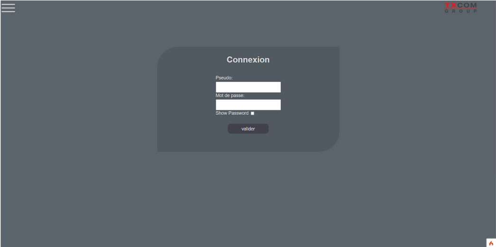
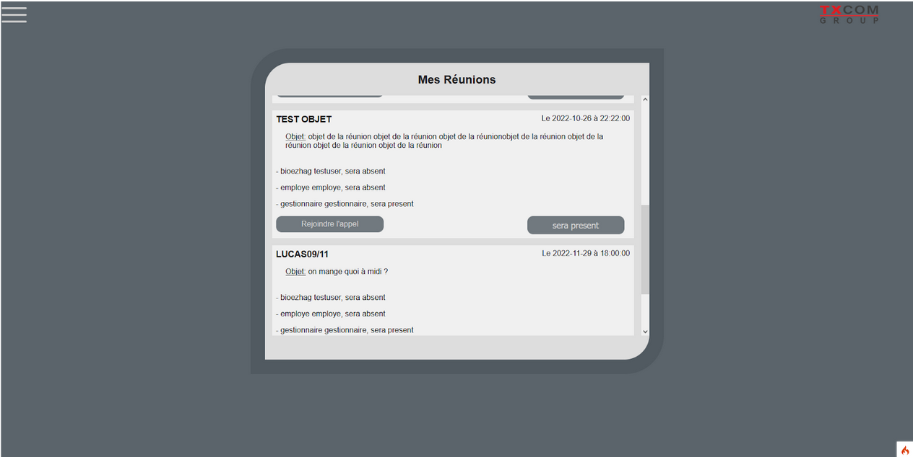
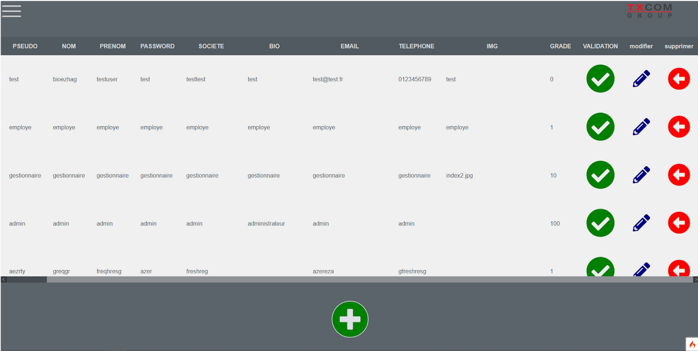

La société TXCOM est une société française spécialisée dans la conception ,la fabrication et la commercialisation de produits de communication. Son siège social est situé au Plessis Robinson (Hauts de Seine)
L’entreprise TXCOM souhaite adjoindre une nouvelle fonctionnalité à sa plateforme permettant de collaborer à distance via la vidéo conférence. Vous être chargé de l’étude technique et de la réalisation d’un prototype.
Il y a une gestion des droits et des utilisateurs. Un visiteur ne peut accéder qu’à la page de connexion et à l’accueil du site.

Il y a plusieurs types d’utilisateurs :
- administrateur, il a accès a tout le site et gère les utilisateurs
- utilisateur, les employés, ils peuvent accéder aux réunions
- gestionnaire, ils peuvent créer des réunions et inviter d’autres personnes
Le formulaire de création de réunion permet de définir les membres de la réunion, un mot de passe, nom, objet et une date et heure. Ensuite, chaque utilisateur peut voir les réunions à venir et il peut annoncer sa présence ou rejoindre l’appel si c’est l’heure de la réunion
Enfin, la page de gestion utilisateur permet de modifier, supprimer, ajouter ou valider les utilisateurs. Par défaut, tout utilisateur créé n’a pas accès au site, il doit être validé pour gagner l’accès.
